Niveau d'Étude
A saint Edouard nous disposons de plusieurs niveaux d'étude pour répondre à tous les besoins académiques nécessaires.
Maternelle
Le niveau maternel est destiné aux enfants de 3 à 6 ans. Il vise à favoriser leur développement global et à les préparer à l'apprentissage scolaire.
A partir de l'âge de 3 ans, les enfants peuvent intégrer notre école maternelle, où ils découvrent un environnement propice à leur développement.
Classe organisée :
- 1
er Maternelle (3-4 ans) - 2
er Maternelle (4-5 ans) - 3
er Maternelle (5-6 ans)
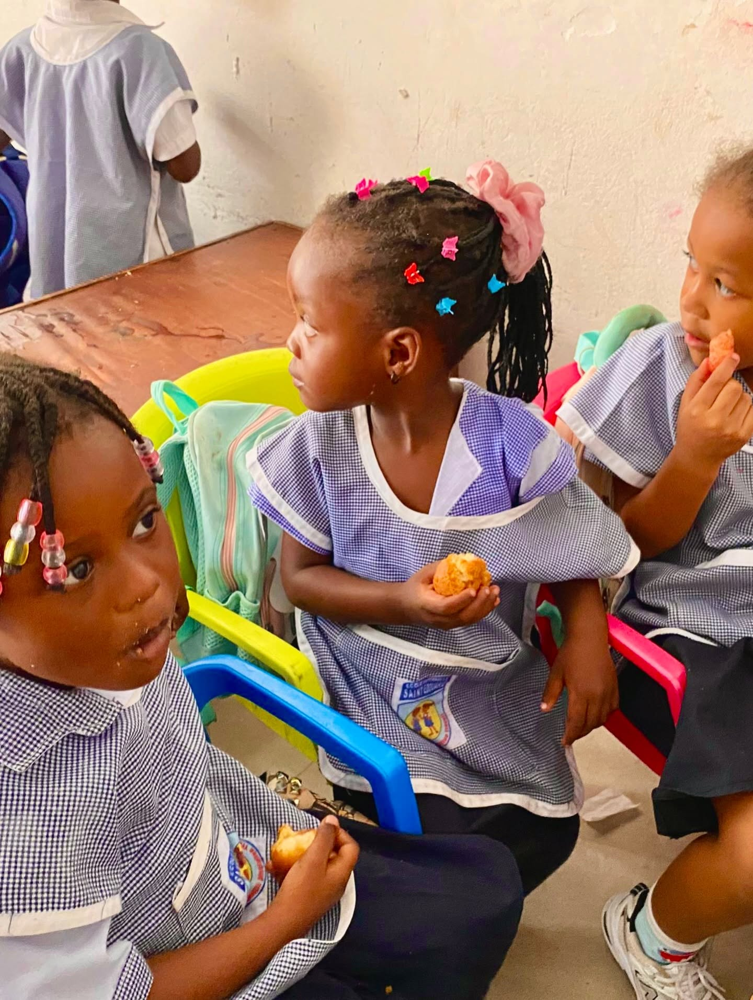
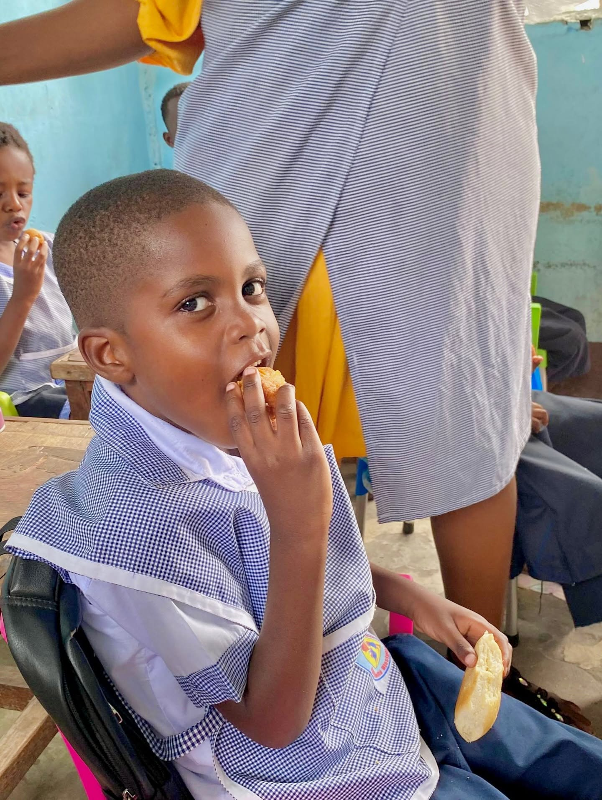
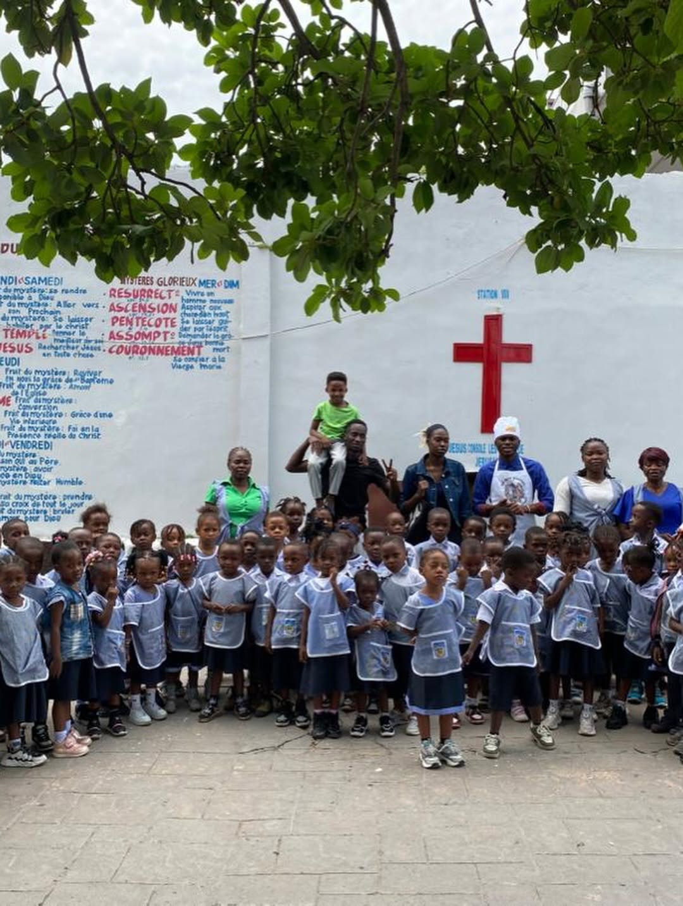
Primaire
Le niveau primaire est destiné aux enfants de 6 à 11 ans. Il vise à leur fournir les bases solides de l'éducation et à les préparer aux études secondaires.
Les enfants peuvent intégrer notre école primaire à partir de l'âge de 6 ans, où ils bénéficient d'un enseignement complet et adapté à leur développement.
Classe organisée :
- 1
er Primaire (6-7 ans) - 2
er Primaire (7-8 ans) - 3
er Primaire (8-9 ans) - 4
er Primaire (9-10 ans) - 5
er Primaire (10-11 ans) - 6
er Primaire (11-12 ans)
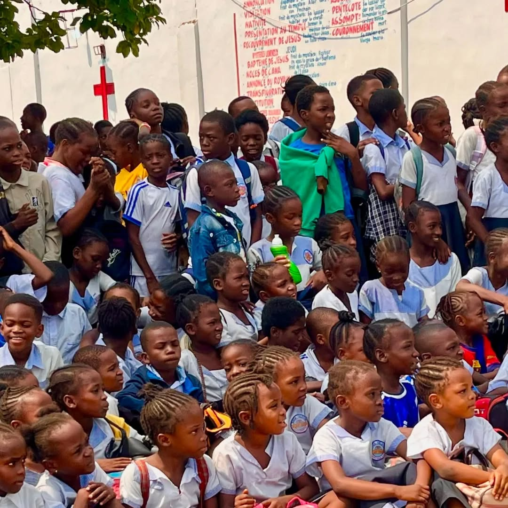
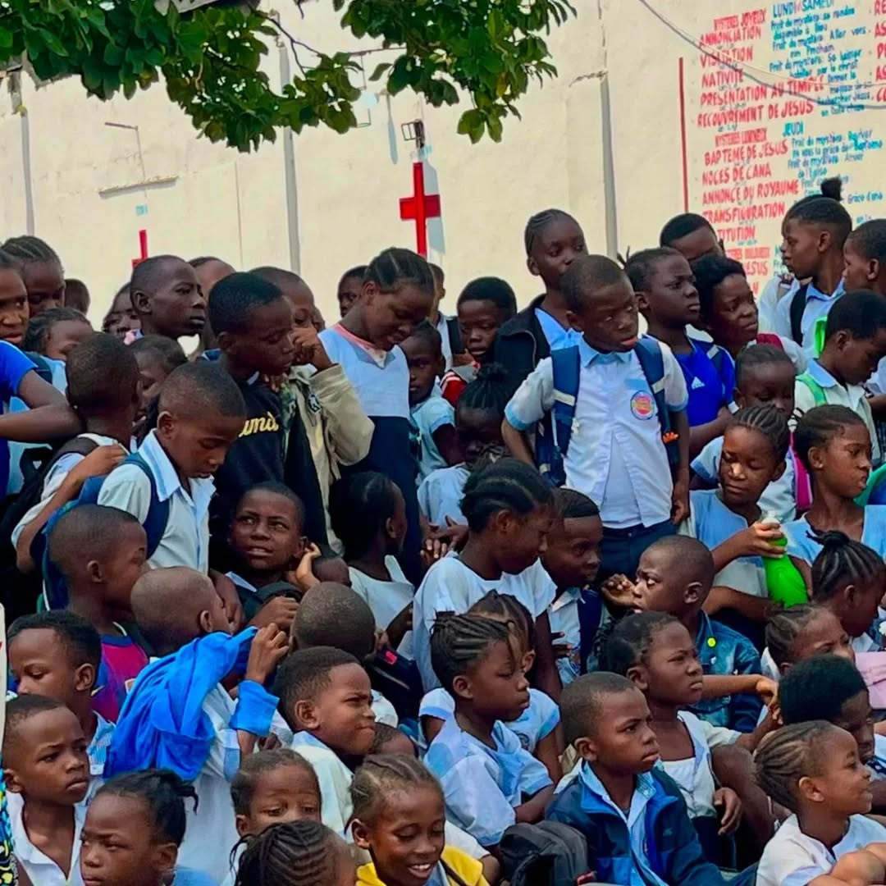
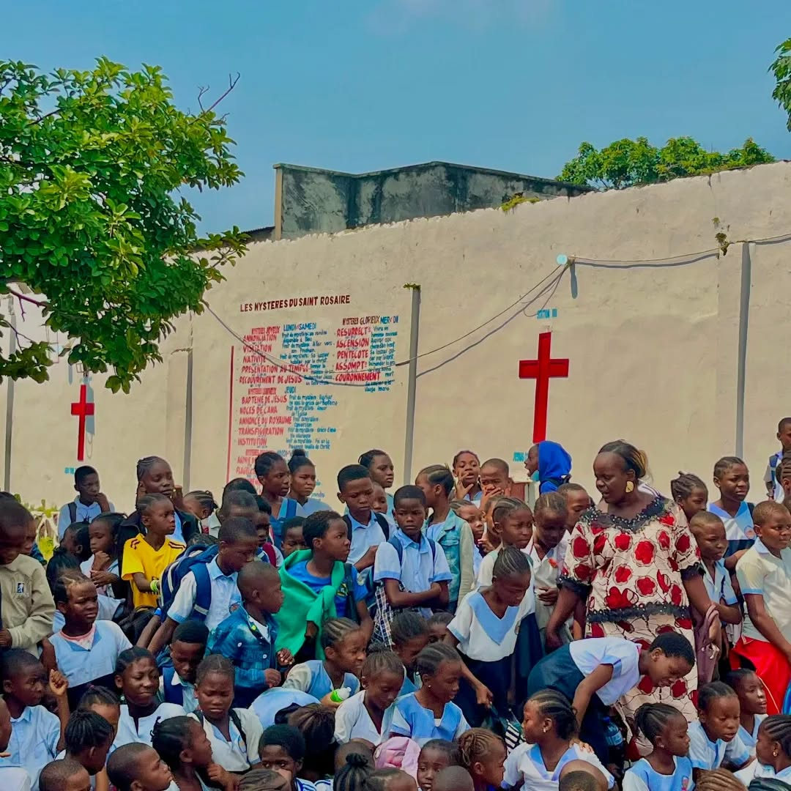
Secondaire
CTBE
Une fois l'ENAFEP obtenu, le Cycle Terminal de l'Education de Base (C.T.E.B.) est la prochaine étape pour votre enfant. Ici il s'habitue à avoir plusieurs professeurs dans une même classe.
Classe organisée :
- 7
er Année (12-13 ans) - 8
er Année (13-14 ans)
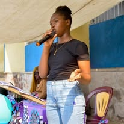
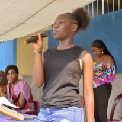
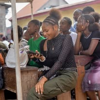
Humanite
La dernière étape du parcours scolaire de votre enfant et la plus importante, c'est en effet après cet étape que votre enfant obtiendra le Diplôme d'Etat qui lui ouvrira la porte des universités.
Classe organisée :
- 1
er Humanité (14-15 ans) - 2
er Humanité (15-16 ans) - 3
er Humanité (16-17 ans) - 4
er Humanité (17-18 ans)
De la 1ère à la 4ème, nous formons votre enfant à travers nos 3 sections à se préparer au mieux pour les Examens d'Etat. Ici, nous faisons tout pour que nos élèves brillent et reflètent l'excellence au niveau national car il en va de la réputation de notre établissement.
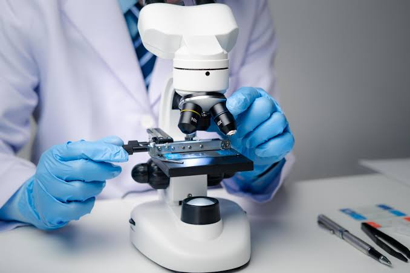
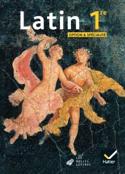
Section Scientifique
La section scientifique est destinée aux adolescents de 14 à 18 ans. Elle vise à leur fournir une formation approfondie dans les matières scientifiques et à les préparer à l'enseignement supérieur ou à la vie professionnelle.
La section scientifique, La section des amoureux des mathématiques et de la science, votre enfant ayant un attrait pour ces matières sera comblé en choisissant cette section. Il en apprendra plus sur les Mathématiques, la Physique, la Chimie, la Biologie, la Géométrie Descriptive et bien d'autres cours toujours pour lui assurer l'épanouissement dans ses études.
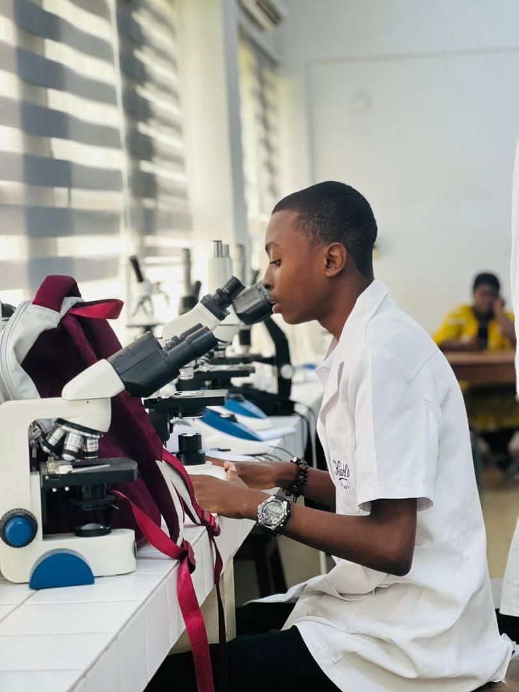
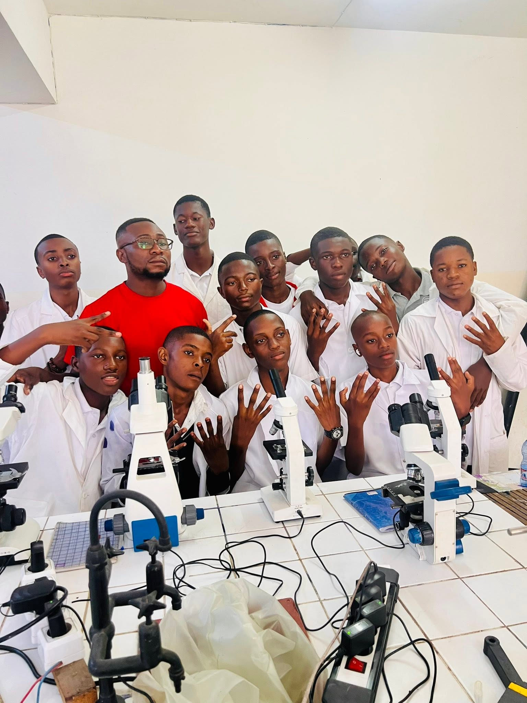
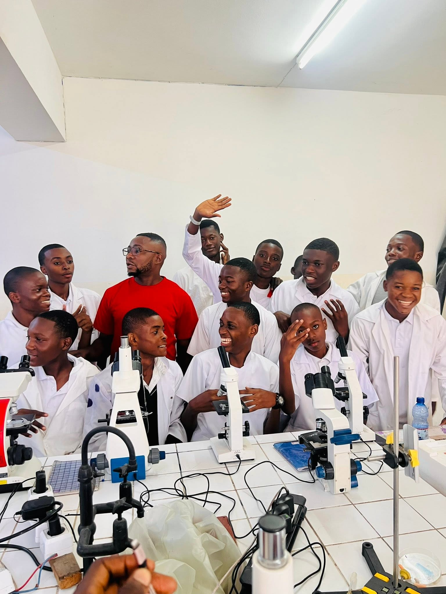
Section Litteraire
La section littéraire est destinée aux adolescents de 14 à 18 ans. Elle vise à leur fournir une formation approfondie dans les matières littéraires et à les préparer à l'enseignement supérieur ou à la vie professionnelle.
La section littéraire, Avec son option Latin-Philosophie, ici votre enfant qui se sent attiré par les lettres et les cours de langues aura la possibilité d'approfondir ses connaissances dans ce domaine. Il y apprendra le Latin, la Philosophie, le Français, l'Anglais et bien d'autres cours pour sa formation intégrale.
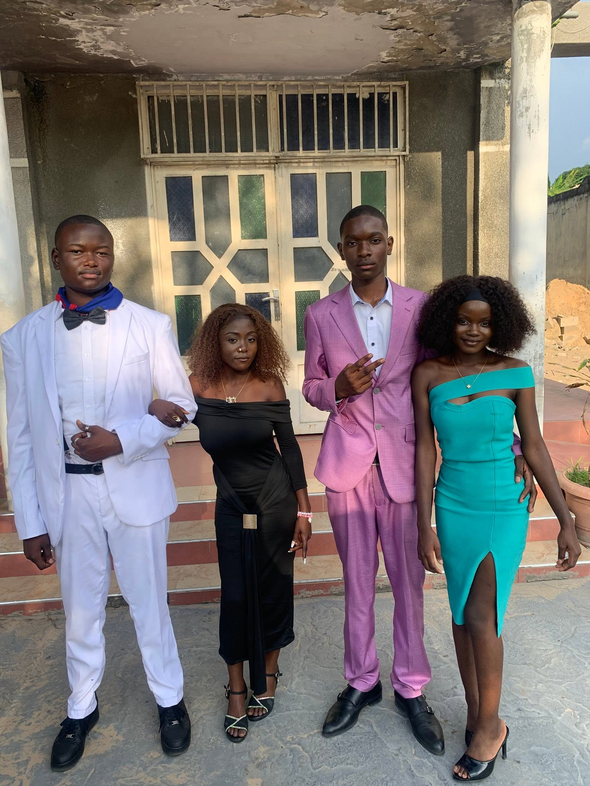
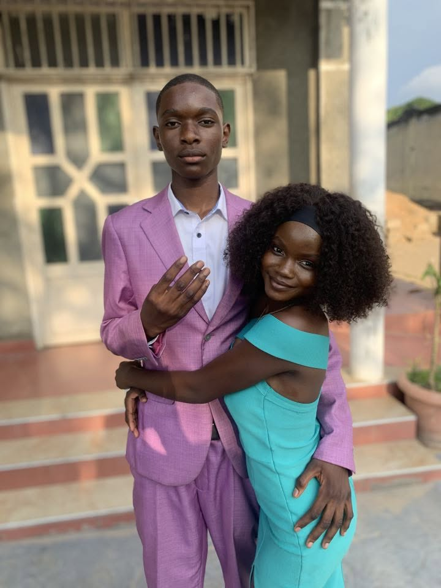
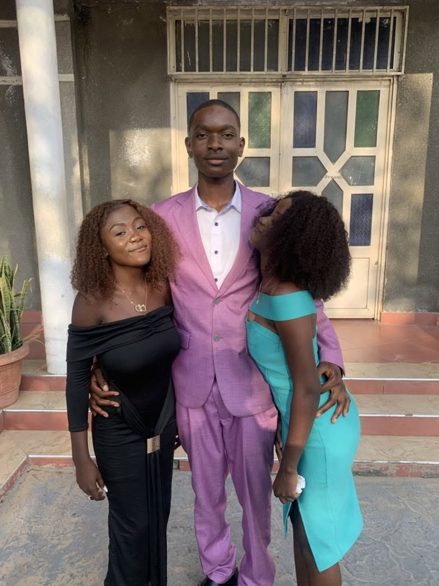
Section Commerciale et gestion
La section commerciale et gestion est destinée aux adolescents de 14 à 18 ans. Elle vise à leur fournir une formation approfondie dans les matières économiques et commerciales et à les préparer à l'enseignement supérieur ou à la vie professionnelle.
La section technique, Avec son option Sociale, offre aux élèves une formation axée sur les techniques d'animation, les sciences familiales et sociales, …, à travers des cours théoriques mais aussi pratiques. Le tout dans un esprit d’écoute de l’autre et d’entraide. Votre enfant particulièrement doué pour les relations se retrouvera pleinement.